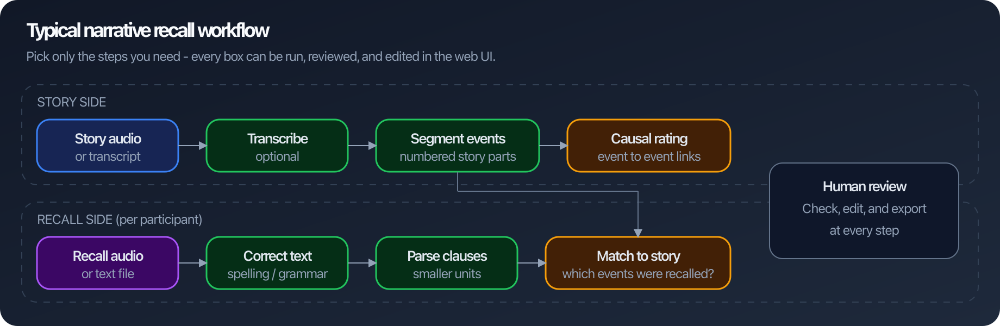
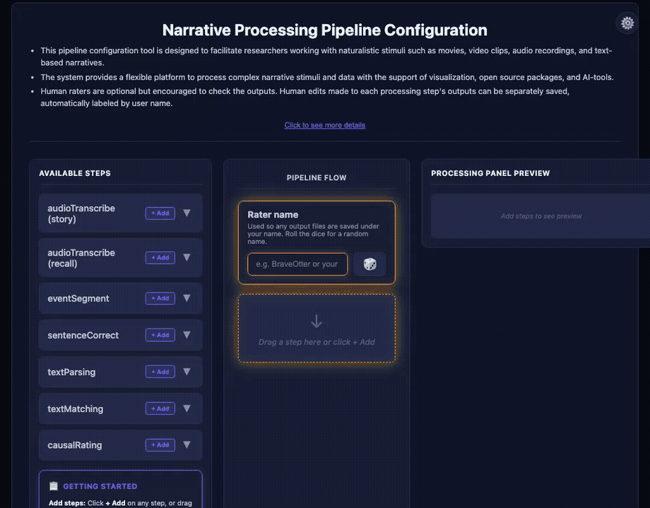
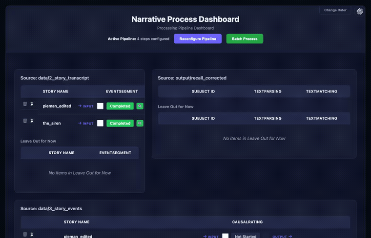
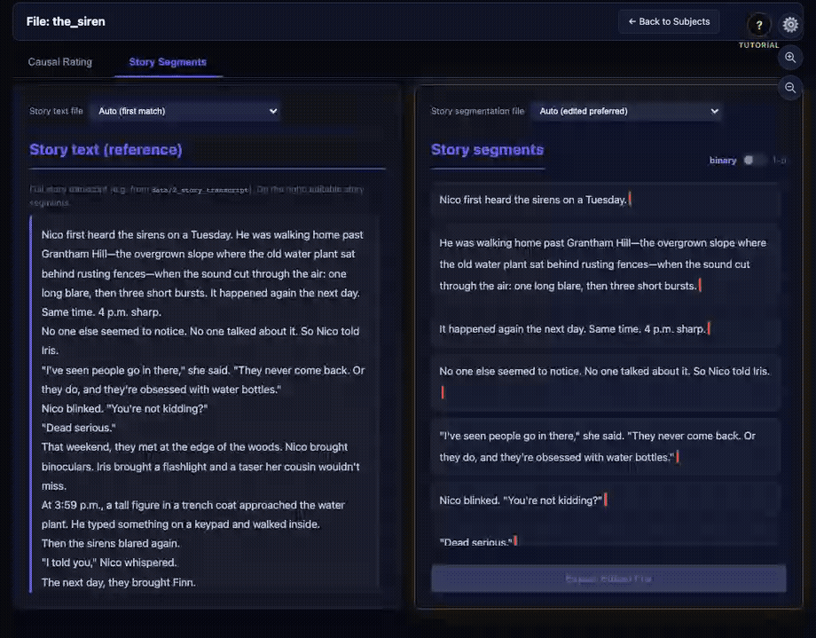
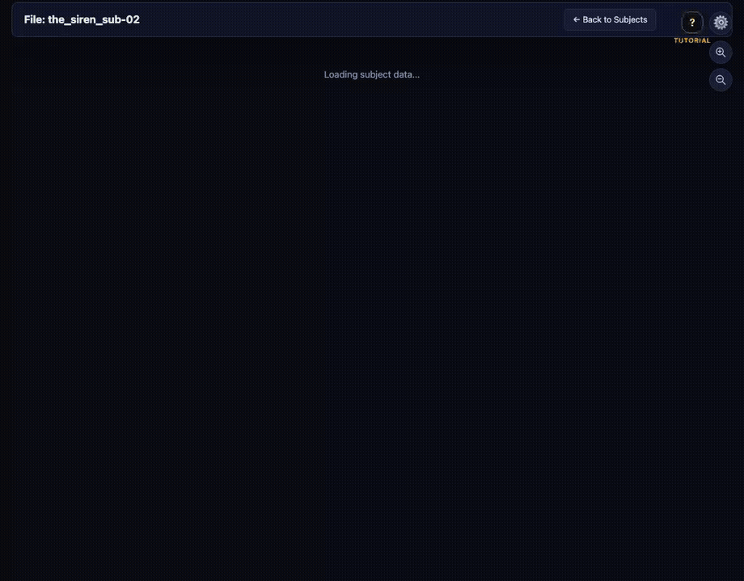
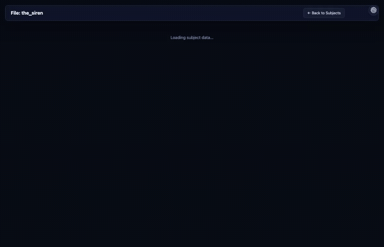

narRaters
Turn complex narratives into structured, reviewable data — with a web UI at every step.
Open source on GitHub: github.com/xianNeuro/narRaters · PyPI: narraters
What is narRaters?
narRaters (narrative + raters) is open-source software on GitHub (xianNeuro/narRaters) that helps process complex narratives (e.g., audio books, text-based stories, interviews, conversations) for memory, language processing, causal reasoning, and LLM research.
Imagine you ran a memory study: participants listened to a story, then recalled what they remembered. Before analysis, you need structured data — what happened in the story, what each person recalled, and how those pieces connect. narRaters runs common narrative-processing steps and gives you a web interface to review and fix outputs before exporting.
Works for audio or text, stories or other long narratives (including movie annotations), and human-only or human-vs-LLM workflows.
What can it do?
| You have… | narRaters helps you… |
|---|---|
| Story audio or transcript | Transcribe it and split it into numbered events |
| Participant recall files | Fix spelling, parse into clauses, and match to story events |
| A segmented story | Rate causal links between event pairs |
| AI-generated outputs | Screen, correct, and sign off in the web UI |

Get started in 3 steps
Download & open
Get the ZIP, unzip, and double-click narRater.app (macOS) or narRaters_installer.bat (Windows). Requires Python 3.10+.
Pick your pipeline
Your browser opens to the pipeline builder. Drag in only the steps you need (e.g. segment → match → causal rate). Example files ship with the ZIP download.
Run, review, export
On the dashboard, click cells to run processing. Open results with the magnifying-glass icon, edit in place, and export when ready.
Or via terminal (Python 3.10+). Run from the folder that contains your data/ and output/ directories:
python --version # must show 3.10 or newer python3 -m pip install narraters --upgrade # wait for “Successfully installed” cd /path/to/your/project # folder with data/ and output/ narraters serve # browser opens to the pipeline builder
Then continue with steps 2–3 above — pick your pipeline, run steps on the dashboard, review, and export.
See the app


Run steps from the grid. Green means completed — click the magnifying glass to inspect and edit outputs.

Move the cursor through the text and click to drop boundary bars. Toggle binary or 1–5 strength (bar colored blue→red).

Story events on the left; recall segments on the right. Click a segment, then click events to match — or type event numbers. Set Detail / NA / Gist per segment.

Click a cell in the grid to score how strongly one story event led to another (0–3).
Install options
- Easiest: Download ZIP → double-click launcher → browser opens automatically.
- Python:
python3 -m pip install narraters --upgrade,cdinto your project folder, thennarraters serve - Learn more: Tutorial PDF · Full README